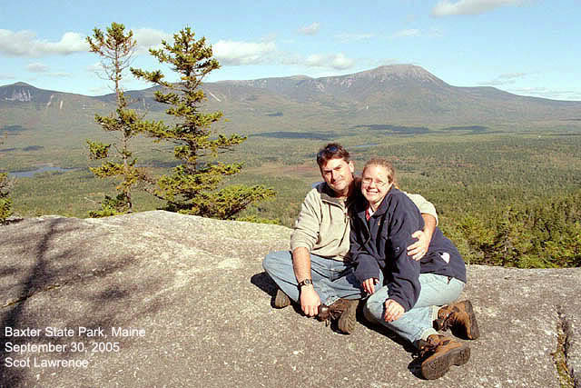
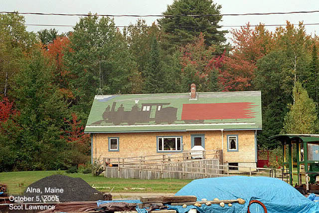

This tour begins with...my wedding!
:)
The lovely miss Debbie and I were married
on September 24, 2005. For our Honeymoon we traveled for 2 weeks through
Vermont and Maine, visiting Northern Vermont, The Baxter St. Park and Mount
Katahdin area of North Central Maine. Over to the coast to visit Bar Harbor
and Acadia Park, and finishing up at Boothbay Harbor then heading home.
Deb and I have always been huge fans
of New England, and Maine in particular. In fact, it was because of our
travels to Maine that I first discovered the Maine 2-footers!
This trip was very much NOT focused
on trains! ;) It may not look like it from this webpage,but visiting train
sites was a VERY small part of our trip..yes, I visited 2 museums,but they
were both closed (it was a weekday both times) so I just stopped, hopped
out of the car, and took a few shots.. im focusing on the train pictures
with this page because im making it to share the train pictures with railfans!
(there is another album of wedding and honeymoon pictures, for friends
and family, that doesnt have a single train photo in it! ;)
on with the tour!
After 2 days in beautiful northern Vermont,
visiting Montpelier, Ben & Jerrys factory
tour! and some hiking in the mounains,
we had a long drive over to Millinocket, Maine. Rangeley and Phillips were
on the way.
(I didnt find the Rangeley station,
but I didnt look very hard for it either..
maybe next time) but! I found the Phillips
station! The best surviving relic of the original Sandy River & Rangeley
Lakes Railroad.

SR&RL station, Phillips Maine.


I brought a few historic photos with
me, and attempted to photograph the same
scene as it looks today. This is looking
North.
looking South


Heading over to the SR&RL museum, a
mile or so north of the Phillips station.

I knew the SR&RL museum also had
an engine house and shops! it wasnt in the
area of the little Sanders station,
so we took a walk down the tracks, figuring the
shop area must be "at the other end
of the tracks"..it was..but over a mile away!
we didnt walk there, instead we went
back to the car, figured on the map where
the "other end" must be, then drove
and found it!
They found three original SR&RL
tenders buried under cinder piles!
here is one of them.
The "other end" of the current SR&RL.
They have built a new roundhouse on the foundation of "the old stone fort"
which was the original Phillips & Rangeley
enginehouse.
Arriving in Millinocket.
We were planning on going hiking in
Baxter State Park, but we encountered our one
and only rainy day of the entire 2-week
trip, so we just stayed at the lodge and drove
into town for dinner. We went to the
local library, (Deb loves her books!) and I went
and looked for local railroad books.
I found a book that listed EVERY surviving
railroad structure in the state of
Maine! I discovered the Millinocket train station
was gone, but a roundhouse still existed!
So I asked the libraian for local maps,
discovered where the yard was, and
drove over!
A Montreal, Maine and Atlantic Railway
train sits in the Millinocket yard.
In the background is the steam-era
Bangor and Aroostook coaling tower,
roundhouse and turntable!
The 3-stall concrete B&A roundhouse.
The old turntable and coaling tower.
it looks like the turntable might still
be in use!
(well..this doesnt have to be ALL train
pictures does it? ;)
This is "5 Lakes Lodge" where we stayed
for 3 days.
great place!
The view of Mount Katahdin from the
lodge.

The next day it was clear and gorgeous!
(our whole trip had amazing weather!)
sunny, crisp, about 70 degrees..perfect!
We knew that hiking to the top of Katahdin
was "out of our league"..and we didnt have enough daylight anyway for a
hike that long. So we went through the book, and selected a hike that was
rated "moderate"..
"ok for kids" it said in the book..
yeah right.. it nearly killed us! ;)
very strenuous hike!
but we finally made it to the top of
Sentinel mountain..it was worth it!
After a few days in the "shadow of Katahdin"
we headed over to Bar Harbor and Acadia.
no trains there! ;)
(although I did find a very cool book
about the "Green Mountain Railway" of Acadia park. a cog railway up to
the top of Cadillac mountain! see this
for more info.
(did you know there has NEVER been a
railroad to Bar Harbor??
I was surprised to find that out..)
Heading down Route 1 from Acadia to
Boothbay..
FL9's! must be former Amtrak engines.
(train wasnt running...I mananged to
hit everything on a weekday..oh well)
Last day of our trip..we stayed over
at Boothbay Harbor.
naturally, I had to drive over to Wiscasset!
The last time we drove through Wiscasset
I had just bought a book on the WW&F at the Boothbay RR museum store,
mere minutes before, and I didnt know anything about the WW&F then..
this time, I knew what to look for!
This is the exact site where the 2-foot
gauge Wiscasset, Waterville & Farmington crossed over the Standard
gauge Maine central.
the 2-foot tracks are long gone, but
the standard gauge tracks remain.
Deb points to the exact location of
the dual-gauge crossing.
looking North East.
the scrubby peninsula of land to the
left once held the WW&F station.
The WW&F extended both north (left)
and south (right) from this crossing on trestlework over the bay.
Pilings that supported the WW&F tracks
can still be seen in the water.
The WW&F was abandoned in 1933!
its amazing these relics are still visible after 72 years. This view is
just north of the Standard gauge tracks.
the location of the WW&F "upper
yard" is behind the trees in the upper left of the photo.
Here is a historic photo of the crossing,
looking north on the WW&F, and the exact same location today.
Looking south, some more remants of the
WW&F trestle are still visable. thats route 1 in the background.
Heading over the WW&F upper yard. Today
there is no trace of the railroad at all, and the site is a baseball field
for the elementary school just up those stairs to the left.
I have read that the concrete ring
of the turntable pit is still intact! simply buried under the baseball
field, and that during a dry summer a ring of dry grass can be seen in
right-field marking the turntable pit.
But it wasnt a dry summer this year,
and I could see no trace of a ring.

Last stop! The WW&F museum in Alna,
just a few miles up the road from Wiscasset.
again, it was a weekday and they were
closed! :(
The holiest of holy 2-footer relics,
IMO,
locomotive
#9, was right there, mere feet away from me! but locked up in the engine
shed..alas...
well, I will just have to come up next
year for the track-laying weekend!
im seriously planning on doing that
next October.
The museum's new enginehouse is based
on the original enginehouse at Wiscasset.
A replica of the original Sheepscot
station.
(I just built a model of this! click
here.)
The *original* "2nd sheepscot station"!
originally a maintance shed, now retured to its original purpose.
this is an actual, historic WW&F
structure!
for me, this was the 2nd best thing
if I couldnt actually visit with #9.
I plan to build a model of this too!
Looking north down the new WW&F
mainline.
An abeautiful 3-way stub switch! another
feature just begging to be modeled.
(the WW&F museum folks based this
on the 3-way stub switch in Phillips (a historic photo of that switch
is back up this page a ways)

Leaving Maine..a foggy day in Boothbay
Harbor.
We will be back! :)
Check out the FOUR 2-footer museums
in Maine!
Maine
Narrow Gauge Railroad Co. & Museum - in Portland
Wiscasset,
Waterville, and Farmington Railway - in Alna
Sandy
River & Rangeley Lakes Railroad - in Phillips
Boothbay
Railway Village - in Boothbay
Scot Lawrence.
October 19,2005
sscotsman@yahoo.com
back
to Scot's page
|